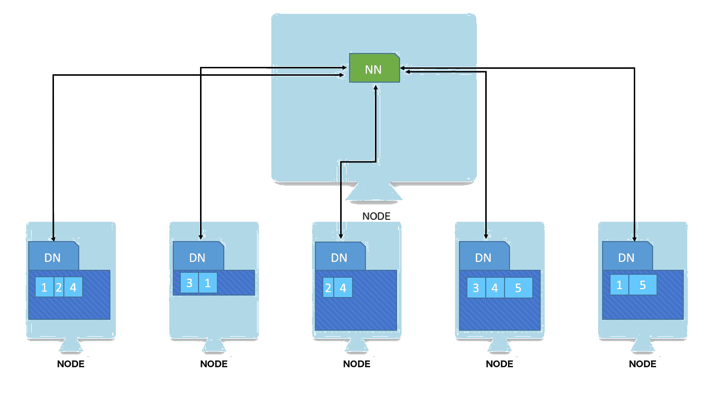
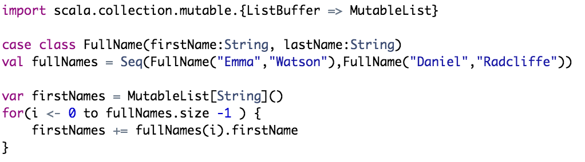

Taming the big elephant in the room
Too abstract? Lets take an example!
Problem: Count how many blue, red and green photos in a collection?
Given these set of images
We have 2 blues, 2 reds and 2 greens.
My image
collection
5k Photos
Fits in my computer!
My image
collection
Loop over and count!
My image
collection
2k red
1k blue
2k green
Flicker's image
collection
80 trillion+ photos
Doesnt't fit in computer...
Flicker's image
collection
Flicker's image
collection
And split it into blocks
Block1 Block
2 Block
3 Block
4 Block
5
And put them in nodes
1 Block
2 Block
3 Block
4 Block
5
And loop over each
1 Block
2 Block
3 Block
4 Block
5
Image1:Red
Image2:Blue
Image3:Green
Image4:Green
...
Image1:Blue
Image2:Blue
Image3:Green
...
Image1:Red
Image2:Red
Image3:Green
Image4:Red
...
Image1:Blue
Image2:Blue
Image3:Green
Image4:Red
...
Image1:Blue
Image2:Green
Image3:Green
Image4:Red
Image5:Red
...
Sending data to one...
1 Block
2 Block
3 Block
4 Block
5
Input
Red
Blue
Blue
Red
Green
Red
Green
...
Maintains 3 variables...
Red Count
Green Count
Blue Count
Goes over one by one
Output
Red:3
Blue:2
Green:2
Called Map.Transforms data of an image into its color.
This phase can already be parallelized.
Nodes running Map are called Mappers.
Called Reduce.Computes sum from all mappers.
Nodes running Reduce operation is called Reducer.
Food for thought: Can we parallelize reducers as well?
One reducer for each color?
Input
Red
Red
Red
...
Output
Red:3
Output
Green:4
Output
Blue:4
Input
Green
Green
Green
Green
...
Input
Blue
Blue
Blue
Blue
...
How does mapper know - which color to send where?
Input
Red
Red
Red
...
Output
Red:3
Output
Green:4
Output
Blue:4
Input
Green
Green
Green
Green
...
Input
Blue
Blue
Blue
Blue
...
How does mapper know - which color to send where?
Input
Red
Red
Red
...
Output
Red:3
Output
Green:4
Output
Blue:4
Input
Green
Green
Green
Green
...
Input
Blue
Blue
Blue
Blue
...
Input
Red
Red
Red
...
Output
Red:3
Output
Green:4
Output
Blue:4
Input
Green
Green
Green
Green
...
Input
Blue
Blue
Blue
Blue
...
1 2 3
1 2 3
1 2 3
1 2 3
1 2 3
Quiz Time
If you buy a harddisk today, what are the chances that its broken?
Pretty slim.
Unless you are...
What about if you buy 1000 harddisks and that all of them are broken?
A hard task, even for...

Laslty, what are the
chances
thatatleast one is broken??
Pretty decent.
"At scale, everything rare happens frequently."
Any of these machines can fail! Anytime!
1 Block
2 Block
3 Block
4 Block
5
High
chances of loosing the data!Handle these failures by
redundacy..
1
3
2
3
4
1
1
3
4
2
But how does one store like that?
Flicker's image
collection
1 Block
3 Block
2 Block
3 Block
4 Block
1 Block
3 Block
4 Block
1 Block
2
To address all these concerns with Distributed computing, we need...
A distributed computing framework
Hadoop
DISTRIBUTED
Storage
So we have Nodes...
And each has Data Node process running...
And each has data node process running... And hence knows its storage capacities...
And each has data node process running... And hence knows its storage capacities like...
And each has data node process running... And hence knows its storage capacities and what's occupied...
And each has data node process running... And hence knows its storage capacities and what's occupied in terms of blocks...
And each has data node process running... And hence knows its storage capacities and what's occupied in terms of blocks. However it doesn't have global view. (Which block, which file?)
And then there's Name Node
And then there's Name Node. Knowing all the Data Nodes.
And then there's Name Node. Knowing all the Data Nodes.
And has the global view of files, blocks, locations...
And then there's Name Node. Knowing all the Data Nodes.
And has the global view of files, blocks, locations...
Staying constantly in touch with each other, via heart-beats
Data Node & Name Node
Premier To
Functional Programming
Checkout the talk - Why big data must be functional
Familiar word count
Type some some more duplicated wordsOutput :
On high level
Given a list of sentences
This is one sentence This is another sentence
We split it into words
This is one sentence This is another sentence
On high level cont'd...
Initialize a dictionary
With each word
This is one sentence This is another sentence
Either add new entry
Or update count
Defining sentences
val sentenceOne = "This is one sentence"
val sentenceTwo = "This is another sentence"
val sentences = Seq( sentenceOne, sentenceTwo )
Printing sentences
for ( i <- 0 to sentences.size -1) {
println(sentence)
}
This is a sentence
This is another sentence
Printing words
for ( i <- 0 to sentences.size -1) {
val words = sentences(i).split(" ")
for(j <-0 to words.size -1) {
println(words(j))
}
}
is
a
sentence
This
is
another
sentence
Making Dictionary or Map
import scala.collection.mutable.{Map => MutableMap}
val wordCount = MutableMap[String,Int]()
for ( i <- 0 to sentences.size -1) {
val words = sentences(i).split(" ")
for(j <-0 to words.size -1) {
val currentWord = words(j)
if (wordCount.isDefinedAt(currentWord)) {
wordCount(currentWord) = wordCount(currentWord) + 1
}else {
wordCount(currentWord) = 1}
}
}
}
Things I don't like
import scala.collection.mutable.{Map => MutableMap}
val wordCount = MutableMap[String,Int]()
for ( i <- 0 to sentences.size -1) {
val words = sentences(i).split(" ")
for(j <-0 to words.size -1) {
val currentWord = words(j)
if (wordCount.isDefinedAt(currentWord)) {
wordCount(currentWord) = wordCount(currentWord) + 1
}else {
wordCount(currentWord) = 1}
}
}
}
Splitting
Lookup
Updation
Things I don't like
import scala.collection.mutable.{Map => MutableMap}
val wordCount = MutableMap[String,Int]()
for ( i <- 0 to sentences.size -1) {
val words = sentences(i).split(" ")
for(j <-0 to words.size -1) {
val currentWord = words(j)
if (wordCount.isDefinedAt(currentWord)) {
wordCount(currentWord) = wordCount(currentWord) + 1
}else {
wordCount(currentWord) = 1}
}
}
}
Splitting
Lookup
Updation
Separate splitting from counting
PL
I
T
OU
N
T
Small detour
Are 2 reasons why we iterate
Transforming onelist into another Aggregating one
list into value I/P: [1,2,3,4,5] O/P: [2,3,4,5,6] I/P: [1,2,3,4,5] O/P: 15
Name the patterns?
Map
Reduce/Fold
Transforming - Map
Transforming onelist into another e.g.
* List of full names in first names
* Add one to each number
Traditionally
mutation, indexes!
Irrelevant details.
B/w Case Classes are Scala syntactic-sugar.
Instead
Capture transformation on one element.
fullNames.map(fullName => fullName.firstName)
Lambda expression executes for each element.
Iterates
over list.
Finally returns a transformed list.
Aggregating - Reduce/Fold
Aggregating one list into value e.g.* List of salaries into average salary
* Given list of words, find most frequent word
* Given list of words, find word count
Traditionally
Again - temp variables, indexes, mutations...
Instead
Focus on aggregation
salaries.foldLeft(0.0)((avgSalary,currentSalary)=>avgSalary+currentSalary/salaries.size)
Value
Value
from list
or return value
Seq(1,2,3,4).foldLeft(0)((acc,current)=>acc+current)
Seq(1,2,3,4).foldLeft(0)((acc,current)=>acc+current)
Value for acc is 0
Value for current is 1
Remaining items in seq are 2,3,4
Result of expression acc+current is 1
Seq(1,2,3,4).foldLeft(0)((acc,current)=>acc+current)
Value for acc is 1
Value for current is 2
Remaining items in seq are 3,4
Result of expression acc+current is 3
Seq(1,2,3,4).foldLeft(0)((acc,current)=>acc+current)
Value for acc is 3
Value for current is 3
Remaining items in seq are 4
Result of expression acc+current is 6
Seq(1,2,3,4).foldLeft(0)((acc,current)=>acc+current)
Value for acc is 6
Value for current is 4
No more remaining items.
Result of expression acc+current is 10
Seq(1,2,3,4).foldLeft(0)((acc,current)=>acc+current) == 10
One more step towards functional word count.
How will you test it?
What will be the scenarios you'll test?
Say Hello to FunSuite.
One of the testing frameworks of ScalaTest.
Scala allows to extend functionality with mixins.
Say Hello to ShouldMatchers.
Allows BDD style of test
Say Hello to GivenWhenThen
Landscape
of big data
Will need:
- Distrubuted storage
- Cluster Manager
- Computation mechanism
- Security
- Workflow management
Sqoop
Transferring bulk data
- RDBMS to HDFS
- HDFS to RDBMS
Introducing
Spark
API
Has APIs in 4 langauges: Scala, Java, Python, R.
Recommended! Unless you've other reasons.
- Spark written in it! You'll need to learn it anyway.
- Offers concise API.
- Spark's abstractions mimics Scala collections.
- Functional - immutability & lambdas.
- Shell for exploration.
- Awesomely readable codebase.
- Existing code base.
- Capability of team.
- Leveraging existing data science communities.
- You don't want to be cool.
Spark's core abstraction is RDD
Resilient Distributed Dataset
RDD is a statically typed, lazily evaluated, immutable distributed collection!

Like collections, RDD supports transformations and I/O from Storage System.
How
Spark
Works
Spark is:
Data storage solutionCluster Manager
Hands on with Spark
Word Count with spark.
Similar logic, slightly different API.
Why should you test?
Because spark job results might end up directly in prod.
Why should you test?
High Cost of running job with production data.
Cost: Cluster usage cost
Cost: Latencies and delay because of all the stack
What tests will you write for Word Count?
Cool! Lets write spark tests for these.
Things I don't like about this.
- Unnecessary ceremony with Spark Context!
- "collect" is not good for large datasets.
Say Hello to SparkTestingBase.
- Manages sparkContext.
- Provides RDDCollection to test in distributed manner.
Consider case:
This is one sentence. This is another sentence!
Both "sentence" word should be treated as one.
Test this?
Server logs analysis
| User Id | Session Id | Current Location | Search Location | Search Location Filter | Minuimum Price Filter | Maximum Price Filter |
|---|---|---|---|---|---|---|
| 1537 | 3069 | L | B | B | 6853.456700981886 | -1.0 |
| 20 | 26258 | J | -1.0 | -1.0 | ||
| 20 | 26258 | J | 100.56 | -1.0 |
Green: Search event
Red: Login event or testing event - Never has search location.
Server logs analysis
| User Id | Session Id | Current Location | Search Location | Search Location Filter | Minuimum Price Filter | Maximum Price Filter |
|---|---|---|---|---|---|---|
| 1537 | 3069 | L | B | B | 6853.456700981886 | -1.0 |
| 20 | 26258 | J | -1.0 | -1.0 | ||
| 20 | 26258 | J | 100.56 | -1.0 |
Lets retrive only search events.
Parsing and using indexes is hard
serverLogs.map(log => log.split(",")).filter(logSplits => !(logSplits(3).isEmpty || logSplits(4).isEmpty))
What is 3?
What is 4?
In comparison to
serverLogs.filter(aLoginEvent)
Or sql
select * from server_logs where searchLocation is not null;
How do you get test data?
Say hello to
ScalaCheck
Can use it for
Generatingsemi-random
data Property
Based
Testing
Or for both
ScalaCheck
Properties Gen Arbitrary3 major components